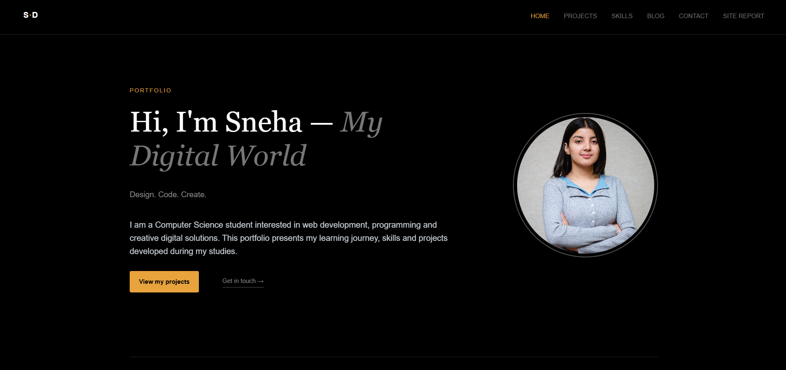
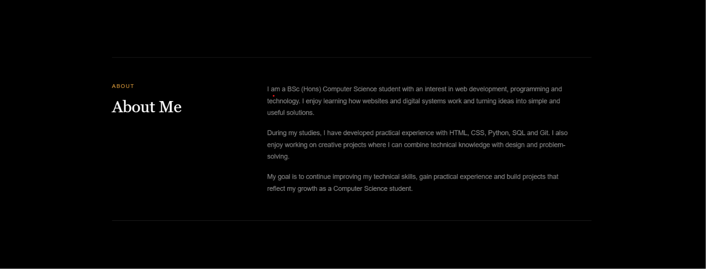
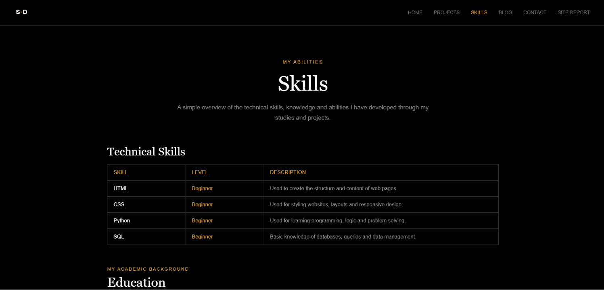
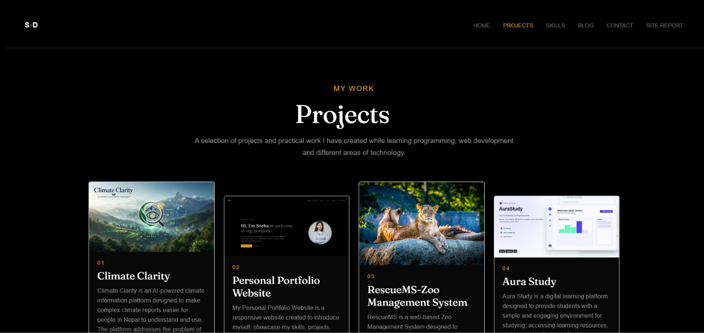
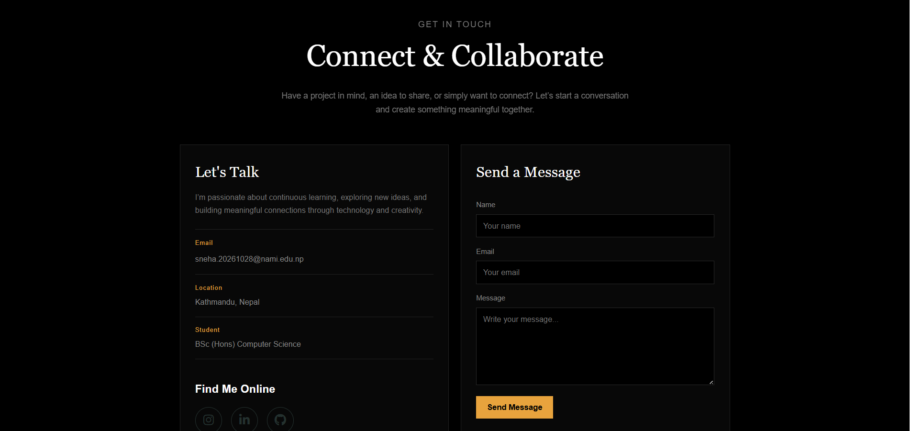
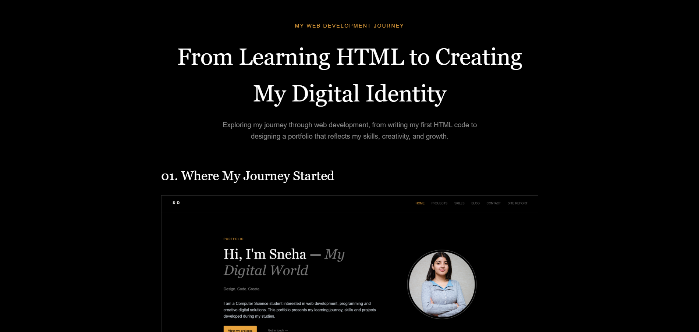
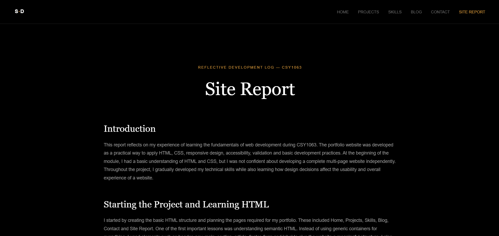

MY WEB DEVELOPMENT JOURNEY
From Learning HTML to Creating My Digital Identity
Exploring my journey through web development, from writing my first HTML code to designing a portfolio that reflects my skills, creativity, and growth.
01. Where My Journey Started

My portfolio Home page introducing me and my work.
My web development journey started with a simple curiosity about how websites are created. Before studying web development, I understood some basic computer concepts but had limited experience building a complete website.
Learning HTML gave me my first understanding of how webpages are structured. I learned that headings, paragraphs, links, images and other elements are not simply visual objects; they provide the structure and meaning of a webpage.
Creating my own portfolio made the learning process much more interesting because I could immediately see the result of the code I was writing.
02. Finding My Design Style

The About Me section gives the portfolio a personal identity.
Once I understood the basic structure of HTML, I started thinking about the visual design of my portfolio. I wanted it to look modern and professional while still feeling like my own work.
I chose a dark background with light typography and a warm accent colour. The dark interface creates a strong visual identity, while the lighter text provides contrast and keeps the content readable.
I selected Fraunces for large headings because its serif style gives the website character. I used Inter for body text because it is clean and easy to read. Consistent spacing, borders and typography helped create a clear visual hierarchy across the website.
03. Turning Ideas into Pages

The Projects page presenting my practical work.
After planning the design, I started building the individual pages. My portfolio includes Home, Projects, Skills, Blog, Contact and Site Report pages. Each page has a different purpose, but they all share the same navigation and visual identity.
I created a shared CSS stylesheet instead of writing completely separate styles for every page. This helped me maintain consistency and made it easier to update the website.
CSS Grid and Flexbox became particularly useful when I started arranging project cards, skills and contact information. Using these layout systems helped me understand how professional websites organise content.
04. The Problems I Had to Solve

The Skills page showing my technical and personal skills.
Building the website was not always straightforward. One of my biggest challenges was controlling layouts with CSS. Sometimes an element would have the correct position on one screen but look different on another.
I also experienced problems with image paths, filenames and image sizing. At first, these problems were frustrating because the code sometimes appeared correct even though the browser was not displaying what I expected.
Instead of changing several things at once, I learned to debug systematically. I checked my folder structure, HTML elements, CSS selectors, image paths and browser behaviour one step at a time.
These difficulties became valuable learning experiences. Every problem I solved gave me more confidence in understanding how HTML and CSS actually work.
05. Making the Website Work Everywhere

The Education section presenting my academic background.
Another important lesson was responsive design. I did not want my portfolio to work only on a laptop screen. It needed to remain usable on tablets and mobile devices as well.
I used flexible layouts, CSS Grid, Flexbox and media queries to adapt the website to different screen sizes. Larger multi-column layouts can become simpler single-column layouts on smaller screens.
Testing different viewport sizes taught me that responsive design is more than reducing the size of elements. Navigation, spacing, images, text and overall usability all need to be considered.
06. Thinking About the Person Using My Website

The Contact page provides information and a message form.
As the website developed, I started thinking less about simply making things look good and more about how a visitor would use the website.
I kept the navigation consistent across every page so visitors can move between sections easily. I also used meaningful headings, labels and alternative text for images to improve accessibility.
The Contact page was designed to make communication straightforward by providing my email address, social links and a message form. These small decisions helped me understand the importance of designing for real users rather than only designing for appearance.
07. What This Project Taught Me

My Blog page records the development and learning process.
The most important thing I learned is that web development requires both technical knowledge and problem-solving skills. Knowing HTML and CSS syntax is useful, but it is equally important to understand why a particular element or layout is appropriate.
I also learned that improvement usually happens through small changes. Testing a page, identifying a problem, making a change and testing again became a normal part of my workflow.
Most importantly, completing a multi-page website gave me more confidence. I now feel more comfortable experimenting with layouts and investigating problems when something does not work as expected.
08. Where I Want to Go Next

The Site Report reflects on my development experience.
I see this portfolio as the beginning of my development journey rather than a finished product. I want to continue improving my JavaScript knowledge and learn more about databases and backend development.
In future projects, I would like to create more interactive websites and applications that solve practical problems. I also plan to continue improving my accessibility, responsive design and user-interface skills.
As my knowledge grows, I will continue adding new projects to this portfolio so that it reflects my progress as a Computer Science student.
Final Thoughts
Building this portfolio has been one of the most useful parts of my web development learning experience. I faced problems with layouts, images and responsive behaviour, but solving those problems helped me understand the development process more deeply.
The project has shown me that a successful website is not only about attractive design. It also needs clear structure, accessibility, responsive behaviour, useful content and a good user experience.
I am still developing my skills, but this project has given me a strong foundation and greater confidence to continue learning and building more advanced digital projects.